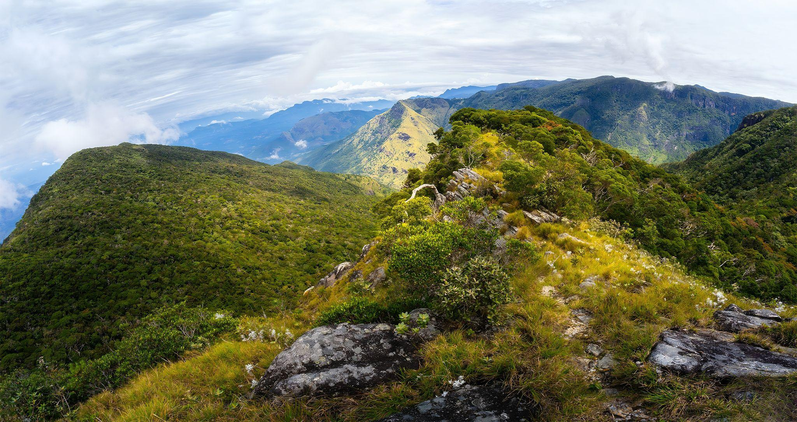

A breathtaking roadside viewpoint on the Colombo-Badulla road, offering sweeping views of lush valleys and distant mountains.
Beragala Viewpoint is one of the most scenic stops along the famous Colombo-Badulla highway. Located just a short drive before reaching Haputale, it offers travelers a stunning introduction to Sri Lanka's hill country.
The viewpoint overlooks vast green valleys, winding roads, and distant mountain ranges. On clear days, the panoramic scenery stretches for miles, while misty conditions create a magical atmosphere as clouds roll across the landscape.
Its easy roadside access makes it a perfect quick stop for photos, relaxation, and enjoying the cool mountain breeze. Whether you're heading to Haputale or Ella, Beragala is a must-visit viewpoint along the journey.
Back to Haputale Hub